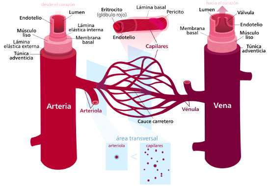
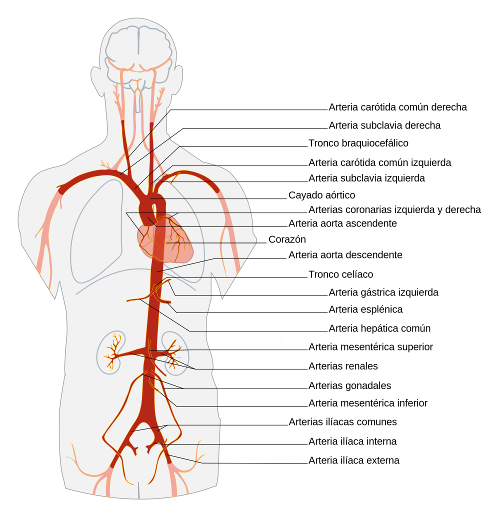
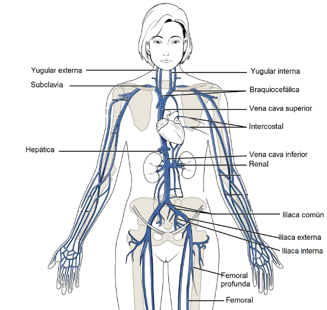

1.3. Vasos sanguíneos
Los vasos sanguíneos son los conductos por los que circula la sangre.
Hay tres clases de vasos sanguíneos: arterias, venas y capilares.
Arteria es un vaso que transporta la sangre y la aleja del corazón. Después del nacimiento, todas las arterias, excepto la pulmonar y sus ramas, llevan sangre oxigenada. Las pequeñas arterias se llaman arteriolas.
Las venas son vasos que llevan la sangre hacia el corazón. Todas ellas, excepto las pulmonares, contienen sangre no oxigenada y soportan una presión menor que las arterias. Las pequeñas venas se denominan vénulas.
Los capilares son vasos que llevan la sangre desde las arteriolas a las vénulas. El descubrimiento de los capilares demostró que la sangre realiza un circuito cerrado: circula del corazón a las arterias, a las arteriolas, a los capilares, a las vénulas, a las venas y de nuevo al corazón.
Estructura de los vasos sanguíneos
Las arterias y las venas están formadas por tres capas concéntricas. De afuera a adentro son:
-Túnica externa o adventicia: formada por tejido conectivo fibroso, fuerte y flexible. Evita los desgarros vasculares durante los movimientos del cuerpo y es más gruesa en las venas que en las arterias.
-Túnica media: compuesta por fibras elásticas y musculares lisas. Permite las variaciones de diámetro de los vasos. En las arterias es más gruesa que en las venas.
-Túnica interna: células epiteliales planas en íntimo contacto con la sangre. En las venas forma las válvulas semilunares, que impiden el retorno de la sangre.
Los capilares sólo tienen una capa, el endotelio, de modo que la pared del capilar es lo bastante fina como para permitir el intercambio de sustancias.
|  |
|
Estructura de los vasos sanguíneos Imagen de Kelvinsong en Wikimedia Commons bajo licencia CC |
Funciones de los vasos sanguíneos
Los capilares son los vasos más importantes desde el punto de vista funcional, ya que permiten la liberación y recogida de sustancias.
Las arterias transportan la sangre a las arteriolas y éstas a los capilares.
Las venas actúan como vasos colectores y de depósito.
Principales vasos sanguíneos
|
Principales arterias del cuerpo Aorta: es la arteria principal que parte del corazón desde el ventrículo izquierdo, dando un giro por detrás del corazón (se le conoce como cayado de la aorta) Coronarias: parten de la aorta ascendente y riegan el corazón. Carótidas: parten del cayado de la aorta hacia la cabeza. Subclavias: parten del cayado de la aorta hacia las extremidades superiores Hepática: arteria que riega el hígado Mesentérica: parte de la aorta y riega el intestino Renales: parten de la aorta descendente hacia los riñones. Ilíacas: Divisiones de la aorta hacia extremidades inferiores. Pulmonar: Parte del ventrículo derecho. Se ramifica rápidamente a los pulmones. |
 |
| Imagen de Edoaradoen Wikimedia Commons bajo licencia CC |
|
Principales venas del cuerpo Cava superior: recoge la sangre de la parte superior del cuerpo. Cava inferior: recoge la sangre de la parte inferior del cuerpo. Hepática: recoge la sangre del hígado y conecta con la cava inferior. Renales: recogen la sangre de los riñones y conectan con la cava inferior. Ilíacas: recogen la sangre de las extremidades inferiores y confluyen en la cava inferior Yugulares: son cuatro venas que recogen la sangre de la cabeza. Desembocan en las venas braquiocefálicas que confluyen en la cava superior Subclavias: recogen la sangre de los brazos y conectan con las braquiocefálicas. Pulmonares: son cuatro venas que desembocan en la aurícula izquierda. Portal hepática: sistema venoso aislado que parte de los capilares intestinales y forma una vena que se ramifica en el hígado. |
 |
| Imagen de OpenStax College en Wikimedia Commons bajo licencia CC |
Pregunta Verdadero-Falso
Retroalimentación
Falso
Las venas son los vasos sanguíneos que llevan la sangre hacia el corazón.
Retroalimentación
Falso
La túnica media está formada por fibras elásticas y musculares lisas para permitir las variaciones de diámetro de los vasos.
Retroalimentación
Verdadero